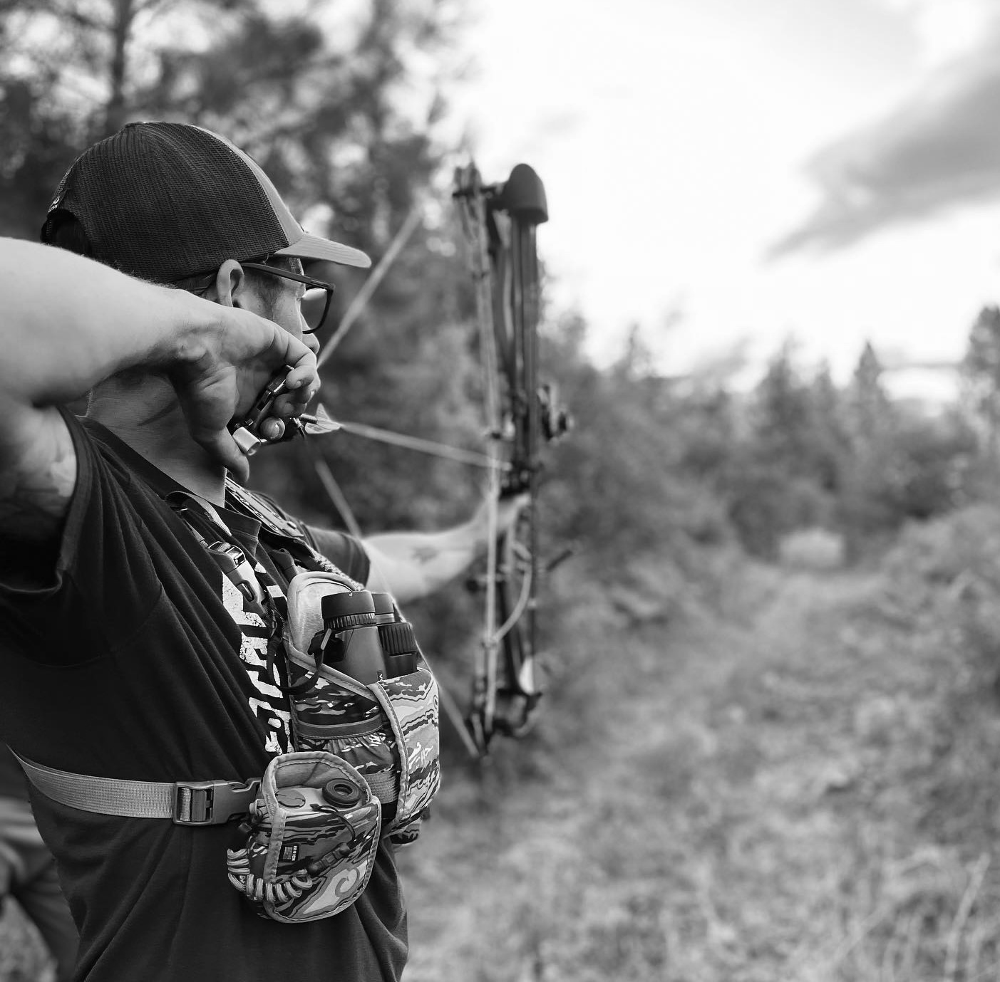
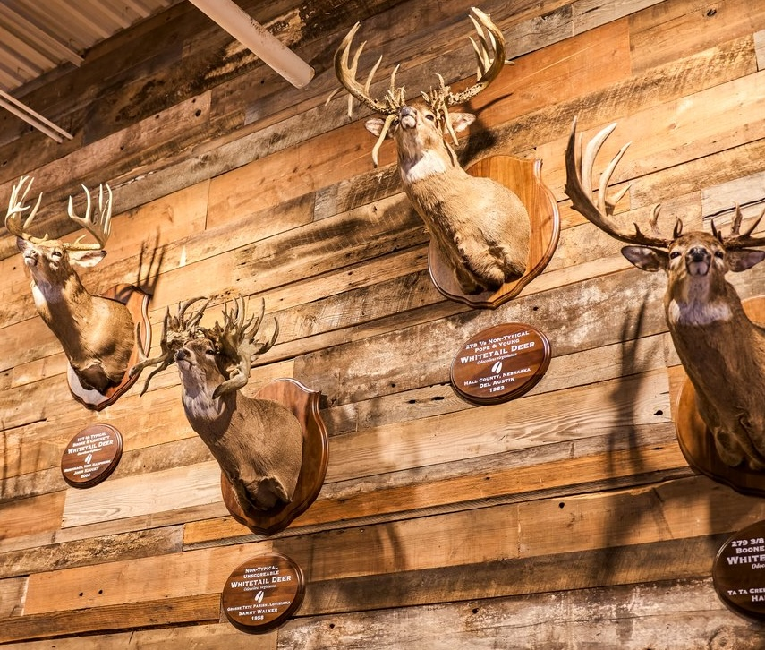

Bowhunter, storyteller, and student of the wild. This is where I share the trail behind the shot—what I’ve learned in the woods, the gear I trust, and the moments that shaped the hunt.
From fresh sign in the mud to hard-earned lessons in the timber, this page is a place for stories, trusted gear, field tips, and the life behind the pursuit.
